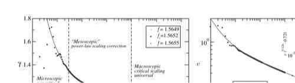

一条漂亮的 log–log 直线，不足以证明 universal β
Lesson07 已把每个 finite disorder sample 的 threshold 锁进 bracket，Lesson08 已把 steady velocity estimator 与 production dt 锁死。现在才允许第一次拟合 v∼(f−fc)β。但这课的目标不是“得到一个接近文献的 β”，而是检查这个 β 对临界 fit window 是否稳定。
0 · Ferrero 为什么专门提醒 corrections-to-scaling？


论文在临界附近把 velocity 当作 order parameter，并给出 v∼(f−fc)β；但 Ferrero 的大尺度工作还专门检查 correction-to-scaling，最终报告 QEW 的 β≈0.245。这里的 0.245 只作为文献 benchmark，不是我们小系统必须拟合出来的目标值。
1 · 先做 regression gold test：同一套拟合必须恢复 β=1/2
继续使用 tilted washboard：
这里不是只验 velocity 数值，而是把“取 log → 选 window → linear regression”整条 β pipeline 交给一个答案已知的问题。
| max Δf | fitted β | 状态 |
|---|---|---|
| 0.048 | 0.503850 | PASS |
| 0.024 | 0.502473 | PASS |
| 0.012 | 0.501617 | PASS |
2 · statistical unit：8 个 disorder realizations，不是 48 个点
使用 seeds 20260902–20260909，共 8 个独立 quenched force landscapes。每个 sample 都重新执行 Lesson07 的 threshold search；然后以该 sample 自己的 bracket midpoint 为零点，测同一组 Δf：
每个 sample 自己的 fc
不拿 seed 20260902 的 threshold 去套另外 7 个 disorder samples。
同一 steady protocol
dt=0.025；丢掉第 1 个 u-period，平均后 3 个 period。
n = 8
6 个 Δf 是同一 realization 内的 repeated measurements，不扩成 n=48。
| seed | fc bracket |
|---|---|
| 20260902 | [0.777636719, 0.777783203] |
| 20260903 | [0.811035156, 0.811181641] |
| 20260904 | [0.755371094, 0.755517578] |
| 20260905 | [0.800488281, 0.800634766] |
| 20260906 | [0.730908203, 0.731054687] |
| 20260907 | [0.777343750, 0.777490234] |
| 20260908 | [0.709521484, 0.709667969] |
| 20260909 | [0.799902344, 0.800048828] |
3 · 先看 ensemble mean，再做预注册 window ladder
| Δf | arithmetic disorder mean v |
|---|---|
| 0.015 | 0.250404439 |
| 0.025 | 0.268473880 |
| 0.040 | 0.294751204 |
| 0.065 | 0.333295069 |
| 0.105 | 0.392643257 |
| 0.170 | 0.482420250 |
现在只改一个东西：依次降低允许进入 regression 的最大 Δf；最低端点和排序保持不变，不做后验挑点。
| registered max Δf | β | 解释 |
|---|---|---|
| 0.170 | 0.267993 | all six points |
| 0.105 | 0.229890 | 去掉最远临界点 |
| 0.065 | 0.195041 | 继续靠近 threshold |
| 0.040 | 0.165810 | 最窄预注册窗口 |
4 · 为什么 95% CI 很窄，仍不能救这个结果？
只对 8 个独立 realization 做 sample bootstrap；每次重采样 realization，然后重新计算 arithmetic mean v(Δf) 和 all-six β。结果：
这个区间甚至覆盖 Ferrero 大尺度 QEW 的 β≈0.245 附近。但这不能覆盖掉 window drift：bootstrap 回答“在当前 estimator/window 下，不同 disorder samples 会让结果抖多少”；window ladder 回答“当前 estimator 是否已经进入一个近似渐近的 power-law regime”。它们是两个不同问题。
5 · threshold bracket 不是主要嫌疑
把 Δf 的零点分别推到每个 sample bracket 的两端，all-six β 的总 span 只有：
它比 0.102183 的 fit-window drift 小两个数量级。因此当前 failure 不能简单归咎为“Lesson07 的 fc 不够精确”。更应怀疑的是 finite size、有限 periodic-u geometry、临界 crossover 与 steady-state finite-sample effects。
6 · 这节证明了什么？没证明什么？
已经证明
β regression pipeline 能恢复解析 1/2；8 个独立 disorder samples 各自有 threshold receipt；sample-level bootstrap 与 threshold-edge sensitivity 已实现；当前 window drift 是明确、可复查的 failure。
没有证明
没有得到 thermodynamic β；没有证明 QEW universality；没有证明 sliding-FE 属于 QEW；更不能把 all-six β=0.268 当成“我们的 β”。
7 · 完整脚本、receipt 与原始 sample 表
打开完整 Python/Numba 脚本 → machine-readable receipt → 8-realization CSV →
all-six beta = 0.267993 sample bootstrap 95% CI = [0.247165, 0.289579] threshold-edge beta span = 0.001004 window beta drift = 0.102183 window drift gate = < 0.030 UNIVERSAL BETA CLAIM = NOT AUTHORIZED WINDOW-STABILITY GATE = NOT PASSED
8 · 下一课：Lesson10 · roughness / ζ
下一步不继续“修 β”，而转去 geometry：在 critical / near-critical configuration 上同时测 B(r) 与 S(q)，预先登记尺度窗，并要求两套 ζ estimator 在同一尺度 regime 中闭合。Lesson06 已经演示过“一个 estimator 接近目标值不够”；Lesson10 会把这个标准带进 Paper2 的 depinning geometry。